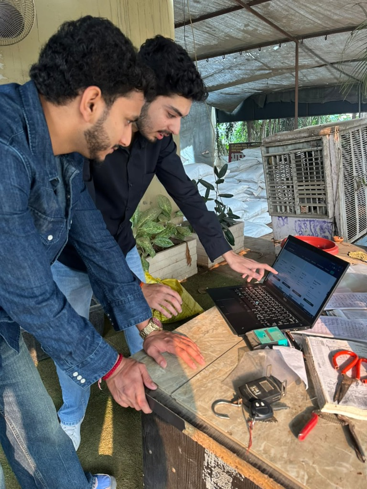
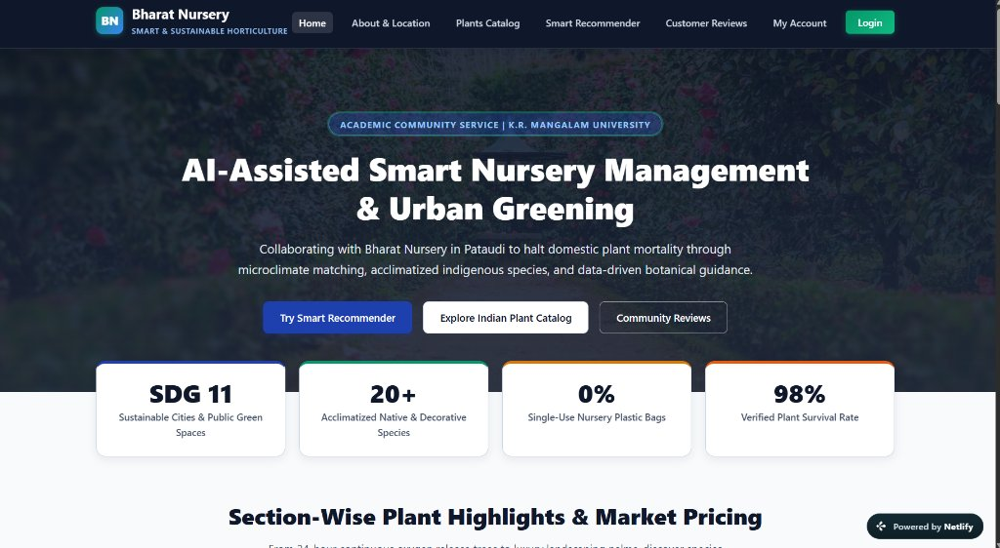
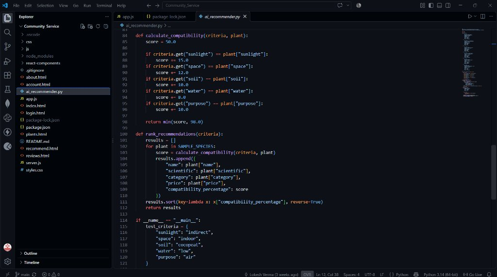
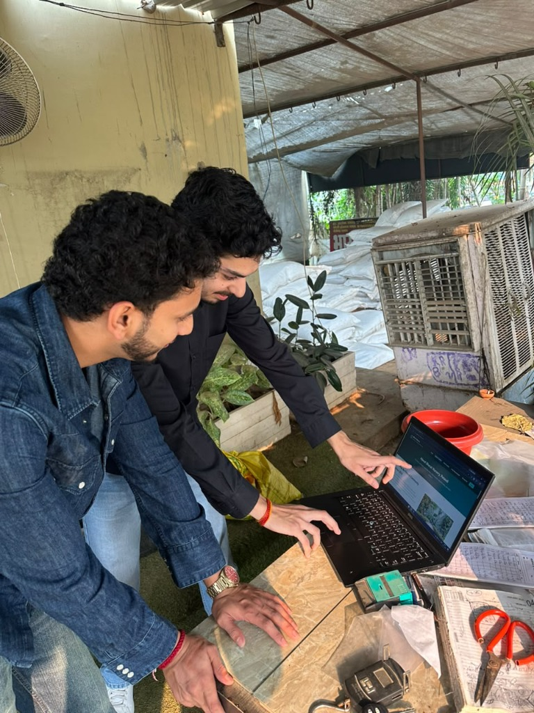

A sustainable digital solution in collaboration with Bharat Nursery, Pataudi, dedicated to eradicating domestic plant mortality through microclimate matching.
Faculty Mentor: Ms. Atisha Dahiya
Primary SDG Mandate: UN SDG 11 (Sustainable Cities and Communities)
Team Members: Lokesh Verma (Lead), Yehan Yadav, Tanay Garg, Akshat Tomar, Punit Kumar
Rather than functioning as a commercial e-commerce site, this platform is explicitly mapped to UN SDG 11: Sustainable Cities & Communities.
Transforms concrete urban balconies and terraces into viable photosynthetic canopies.
Deploys native species (Neem, Peepal, Ashoka) that trap airborne PM2.5 particulate dust.
Rooftop and balcony shading reduces residential ambient heat loads by up to 2.5 degrees Celsius.


Curated by Akshat Tomar: 20 verified species with authentic Indian wholesale nursery market pricing reflecting plant height differences.
Peepal Tree, Neem Tree, Snake Plant, Tulsi. 24-hr continuous oxygen release via CAM pathways.
Bottle Palm, Foxtail Palm, Areca Palm, Bismarckia Palm, Washingtonia, Cycas.
False Ashoka (Pendula), Sita Ashoka, Ficus Panda Topiary, Silver Oak, Weeping Fig.
Gulmohar, Amaltas, Neel Mohar (Jacaranda), Pink Trumpet, Champa, Bougainvillea.

Engineered by Punit Kumar: Renders reactive state in the browser to quantify domestic sustainability in real time:
Engineered by Yehan Yadav in `account.js`:

Online aggregators add 400% markup, obscuring true nursery prices.
Solution: Curated dual-tier pricing for saplings (2-4 ft) versus mature specimens (6-10 ft).
Client environments without installed Python failed to execute AI subprocesses.
Solution: Engineered automatic Node.js fallback to native JavaScript rule engine.
Rigid boolean filters resulted in empty plant matches for partial-light setups.
Solution: Implemented weighted composite scoring formula avoiding hard rejections.
Scale transforms on cards caused subpixel mouse-boundary edge flickering.
Solution: Replaced with hardware-accelerated translateY elevation and mobile hamburger menu.
| Team Member | Assigned Role | Exact Code Ownership |
|---|---|---|
| Lokesh Verma | Team Lead & System Architect | `server.js` (Express REST APIs, Python bridge), architecture, Figma layout |
| Punit Kumar | UI/UX & React Engineer | Figma UI wireframes, `css/style.css` pop animations, `js/react-sdg-app.js` |
| Tanay Garg | AI Recommender Lead | `ai_recommender.py` & `js/recommend.js` (Microclimate compatibility scoring) |
| Yehan Yadav | Community Partner & Geo Dev | `js/account.js` (Geolocation & Postal PIN code APIs), Bharat Nursery coordination |
| Akshat Tomar | Botanical DB & Market Analyst | `js/plants.js` (20-species database schema, live search, multi-category filter) |
By bridging computer science engineering with on-ground nursery practices at Bharat Nursery in Pataudi, our project provides an accessible, scientific solution to urban plant mortality while advancing UN SDG 11.
Integration of low-cost IoT soil moisture probes and computer vision leaf disease diagnosis.
7-page responsive web app, Node.js server, React 18 calculator, Python AI module, and GitHub repo.
K.R. Mangalam University | School of Engineering & Technology